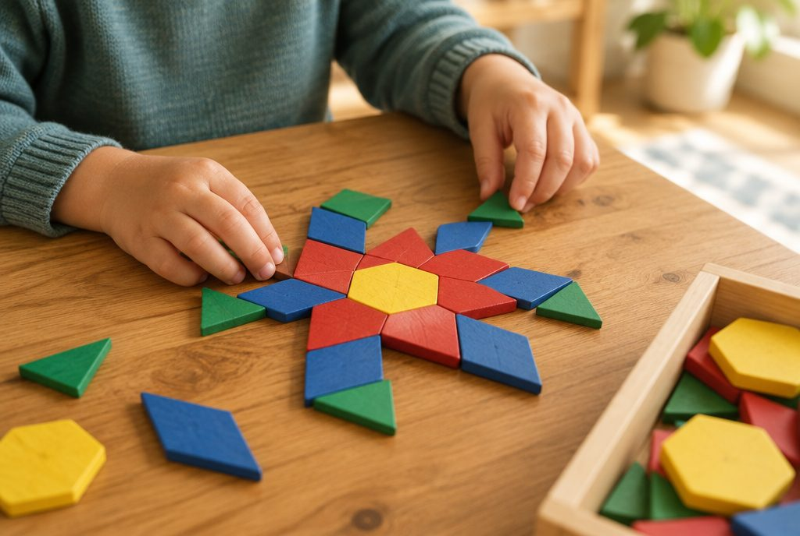

변이 많아지면 어떤 도형이 될까? 다각형과 대각선

축구공 무늬, 벌집, 욕실 바닥 타일을 자세히 보면 오각형과 육각형이 숨어 있어요. 선분으로 둘러싸인 여러 가지 도형의 이름과 성질을 알아보고, 모양 조각으로 빈틈없이 채워 봐요.
선분으로만 둘러싸인 도형, 다각형
선분으로만 둘러싸인 도형을 다각형이라고 해요. 다각형은 변의 수에 따라 이름이 정해져요. 변이 5개면 오각형, 6개면 육각형, 8개면 팔각형이에요.
원처럼 굽은 선이 있거나, 선분이 끝까지 이어지지 않아 열려 있는 도형은 다각형이 아니에요. 다각형은 변의 수와 꼭짓점의 수가 언제나 같아요.
변 7개, 꼭짓점 7개 → 칠각형
변도 각도 모두 같은 정다각형
변의 길이가 모두 같고, 각의 크기도 모두 같은 다각형을 정다각형이라고 해요. 정삼각형, 정사각형, 정오각형, 정육각형처럼 이름 앞에 '정'을 붙여요.
두 가지 조건을 모두 만족해야 해요. 마름모는 네 변의 길이가 같지만 네 각의 크기가 다를 수 있어서 정다각형이라고 할 수 없어요. 직사각형도 네 각은 같지만 네 변의 길이가 다를 수 있어서 정다각형이 아니에요.
한 변이 6cm인 정오각형의 모든 변의 길이의 합 → 6 × 5 = 30(cm)
대각선을 그어 봐요
다각형에서 서로 이웃하지 않는 두 꼭짓점을 이은 선분을 대각선이라고 해요. 삼각형은 세 꼭짓점이 모두 서로 이웃해 있어서 대각선을 그을 수 없어요.
사각형에는 대각선이 2개, 오각형에는 5개, 육각형에는 9개 있어요. 한 꼭짓점에서 그을 수 있는 대각선부터 차근차근 세어 보면 빠뜨리지 않아요.
오각형: 한 꼭짓점에서 2개씩, 꼭짓점 5개 → 2 × 5 = 10, 같은 대각선을 두 번씩 셌으니 10 ÷ 2 = 5(개)
사각형의 대각선에는 성질이 있어요
직사각형과 정사각형은 두 대각선의 길이가 같아요. 마름모와 정사각형은 두 대각선이 서로 수직으로 만나요.
평행사변형, 마름모, 직사각형, 정사각형은 한 대각선이 다른 대각선을 똑같이 둘로 나누어요. 그래서 두 대각선이 만나는 점에서 각 꼭짓점까지의 길이를 짝지어 보면 서로 같아요.
정사각형의 대각선 → 두 대각선의 길이가 같고, 서로 수직으로 만나고, 서로를 반으로 나눠요.
이렇게 풀어요: 모양 조각으로 채우기
모양 조각에는 정삼각형, 정사각형, 정육각형, 사다리꼴, 마름모, 평행사변형이 있어요. 정육각형 하나는 정삼각형 6개, 또는 사다리꼴 2개, 또는 마름모 3개로 똑같이 채울 수 있어요.
바닥을 빈틈없이 채울 때는 한 점에 모인 각의 합이 360°가 되어야 해요. ① 정삼각형 한 각은 60°라서 6개를 모으면 360° ② 정사각형 한 각은 90°라서 4개면 360° ③ 정육각형 한 각은 120°라서 3개면 360°예요. 정오각형 한 각은 108°라서 3개는 324°로 틈이 생기고 4개는 432°로 겹쳐서, 정오각형만으로는 빈틈없이 채울 수 없어요.
정육각형 1개 = 정삼각형 6개 = 사다리꼴 2개 = 마름모 3개
핵심 낱말
- 다각형
- 선분으로만 둘러싸인 도형
- 정다각형
- 변의 길이가 모두 같고 각의 크기도 모두 같은 다각형
- 대각선
- 서로 이웃하지 않는 두 꼭짓점을 이은 선분
- 오각형·육각형
- 변이 5개인 다각형, 변이 6개인 다각형
- 모양 조각
- 정삼각형, 사다리꼴, 마름모 등 모양을 만들거나 채울 때 쓰는 도형 조각
한 줄 정리
- 선분으로만 둘러싸인 도형이 다각형이고, 변의 수에 따라 오각형, 육각형처럼 이름을 붙여요.
- 변의 길이와 각의 크기가 모두 같은 다각형이 정다각형이에요.
- 대각선은 이웃하지 않는 두 꼭짓점을 이은 선분이고, 모양 조각으로 여러 모양을 만들거나 빈틈없이 채울 수 있어요.
학교 교육과정 연결
- [4수03-11] 다각형과 정다각형을 이해한다.
- [4수03-12] 주어진 도형을 이용하여 여러 가지 모양을 만들거나 채우고 설명할 수 있다.